I am currently in the Master in Data Science Program at UC Berkeley.
As of now, the courses I am taking are Statistics for Data Science and Introduction to Data Engineering. Prior course I have completed are Introduction to Data Science Programming, Research Design and Applications.
I'm pursuing a career in Data Engineering and Machine Learning.
I have gained a certification from completing a Python Bootcamp from Udemy,
SQL Mastery course through codewithmosh, and an Introduction to Analytics 2 course provided by NC State.
I have developed a scrabble word finder, a card game of war, black jack, and guess the number in python.
For my relevant work experience I have developed an automated dashboard viewable on SharePoint.
I connected the Dashboard to a SQL server and worked with the Quality Assurance SME on KPI/metrics displayed.
The dashboard was automated to update on a weekly frequency.
Below are buttons that links to different highlighted projects I have worked on my own or my coursework at Berkeley.
Each project goes into depth of the different analysis I or a team I collaborated with conducted.
Please check out any that interest you.
My berkeley programming course material can be found within this repo.
The games I have developed in Python can be found within this repo.
About Me
Christian Lee (He/Him)
I am pursing a Master's in Data Science at UC Berkeley in pursuit of becoming a Data Scientist in the Tech world.
Prior to becoming a full time student I was working as a Senior Analyst at CREO working on a plethora of different projects.
At the consulting firm I help developed 30+ process maps to identify bottlenecks, pain points, and areas to invest in to drive operational improvements.
Worked with SMEs to assess data governance practices, analytic platforms, data strategy, and data pipelines for cliental.
Prior to switching to the data world, I majored in Chemical Engineering at NC State.
I worked as a process/project engineer and ended my career as a project manager.
I have a lot of experience with good documentation practices, developing and executing engineering studies, and commissioning and qualification of new equipment.
Check out my Linkedin page for more work related information.
Overview Climate change can negatively impact the world by producing severe droughts, rise in sea levels, and extreme weather conditions resulting in natural disasters on a scale never seen before. Climate change is the accumulation of greenhouse gasses resulting in long-term change in global temperature and weather patterns. There are many natural reasons for greenhouse gasses to be emitted, but a significant portion of emissions are generated by humans. Greenhouse gasses are comprised of 7 types of gasses and the greenhouse gas that is largely generated due to the human factor* is Carbon Dioxide (CO2).
In this project we will be exploring multiple aspects and uncovering insights with CO2 emission with population growth and income groups, countries energy production and consumption, and clean energy production.
By exploring the datasets of CO2 levels, we intend to discover: 1. What is the direct impact of population growth w/o accounting for energy type to CO2?
2. What trends are we seeing in the adoption of different energy types across countries? Are these trends different based on the country's income group - low, medium, high?
a. How does the energy trend look in the world regions?
b. What is the trend for the death rate per 100K population based on air pollution, and is there any relationship to CO2 emission?
3. What is the world’s trend on renewable energy production?
4. Which large country had the greatest percent decrease in CO2 emissions from their peak?
Data Preperation
When we initially started this project, we tried to find a main dataset that was already in good condition. There were several other topics we thought of doing but their datasets were far too messy. Because of this, there wasn’t too much that we needed to do to get our data ready for analyzing. Most of our files came in completely fine but there was one (Supplemental Dataset 1) that had 4 extra rows on the top for the title and date. Python would get an error when trying to import the data, so we had to manually delete the top 4 rows.
After this we were able to import all the datasets with no problem. Once we stored the data as dataframes the next step was to get rid of any columns that didn’t have any information a.k.a. NaN values. We did this to all four of our dataframes and moved on to renaming the columns to something that was easier to use. We renamed any similar columns to have the exact same name, for example “Country Name” would be renamed to “Country” because it’s shorter, easier to work with (spaces make referring to a column difficult), and it made all the datasets match. Next, we needed to make all the dataframes have only 1 year column. Supplemental Dataset 1 had columns for every year, so we melted that dataframe to match the others.
We needed to be able to work with the numeric values of our data, so we converted all numeric values into numeric types. This way we could use aggregation functions on them like sum(), max(), and mean(). After this we wanted to combine several of our dataframes together to create one big final dataframe that we could all use to start with. In order to do this, Supplemental Dataframe 2 needed to have a column of “Energy_type” with the value of “all_energy_types”. Then we merged Supplemental Dataframe 2 with Supplemental Dataframe 1 to create a combined supplemental dataframe. Finally, we merged our Main Dataframe with the combined supplemental dataframe and created the final dataframe. In the end, our final dataframe contains 55,440 rows and 14 columns. It has information from 1980 to 2019 and contains information on 230 countries.
Supplemental Dataframe 3 was added so we could ask even more questions about the impact of CO2 on deaths. We decided to create another version of the final dataframe because we already had invested a lot of time into the project and didn’t want to change the original final dataframe. We also added Supplemental Dataframe 4 that included all the countries and their country codes because the main dataset didn’t include every country. This dataframe was added to create a time series choropleth map.
What is the direct impact of population growth w/o accounting for energy type to CO2? We have observed no direct relationship between population growth experienced by a country and its CO2 emission levels. It is observed that industrialized nations tend to produce higher levels of CO2 compared to countries with similar population growth but much less industrialization and manufacturing capabilities.
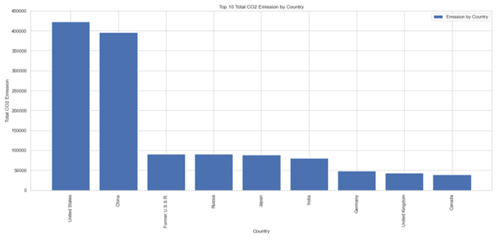
Figure 1: Top 10 countries with highest total CO2 emissions
Figure 1 showing the total C02 emission by top 10 countries. At the start of the research, we were assuming China, and India to be the top two producers. Our analysis showed that the USA has emitted the highest total CO2 for the period recorded in this study (1980 – 2019) closely followed by China.
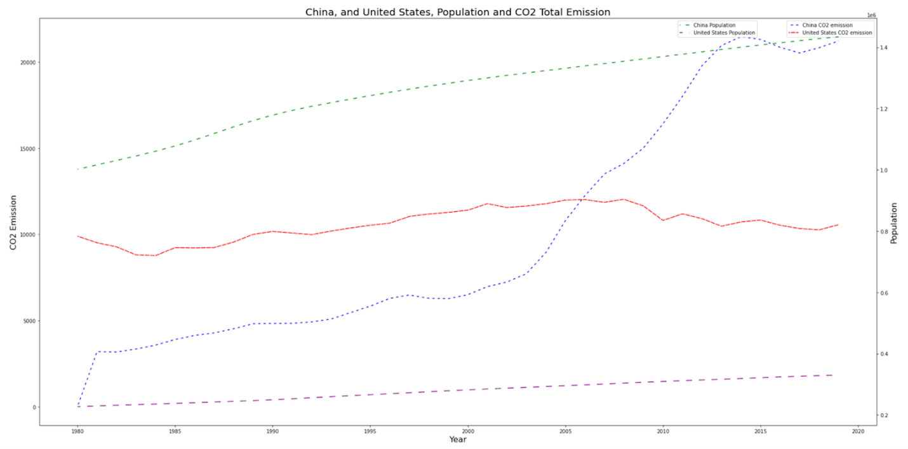
Figure 2: CO2 emission, and population growth trend for USA, and China
Figure 2 above shows detailed CO2 emissions by China, and the US over the research period. Both countries show a growth in population trend, the US over the last decade has made efforts to reduce the CO2 emission, although more recently it has started trending upwards again. China made some effort to reduce CO2 emission in the last decade as well but is trending upward again and is the top CO2 emitter for the current decade.
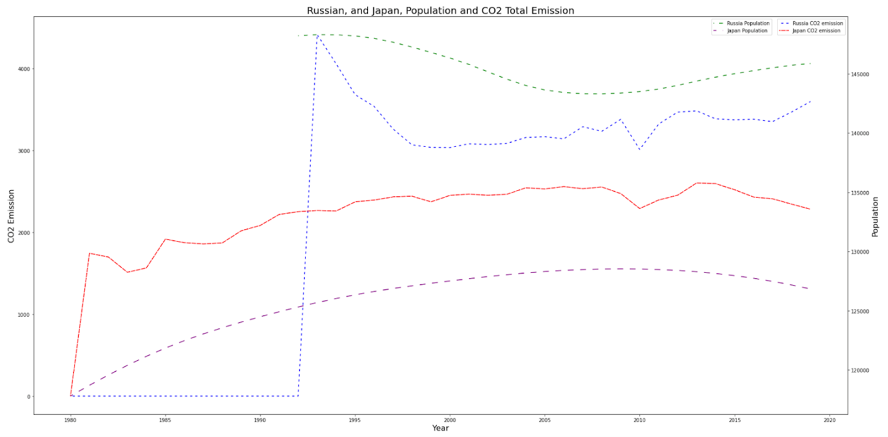
Figure 3: CO2 emission, and population growth trend for Russia, and Japan
Figure 3 demonstrates another view to illustrate that although both Japan, and Russia experienced a downward trend in population growth, the CO2 emission didn’t follow the same trend.
What trends are we seeing in the adoption of different energy types across countries? Are these trends different based on the country's income group - low, medium, high?
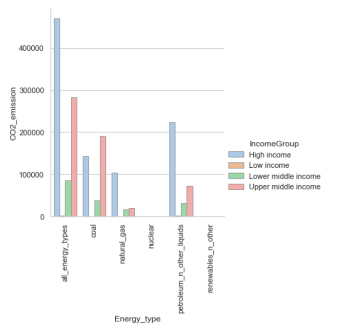 Figure 4: CO2 emission by energy type and income group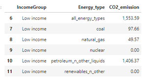 Table 1: Listing the low CO2 emission for low income countries
Note for the data above nuclear and renewables_n_other have no direct CO2 emission and are listed as Zero. Following observations can be made from Figure 4, and Table 1 about the question of adoption of different energy types across countries based on different income group:
• Low-income countries' contribution to the overall C02 emission is the lowest.
• Low-income countries primarily rely on petroleum-based energy types.
• CO2 emission is directly related to the GDP of the income group, higher income group countries are responsible for higher CO2 emission rates.
• Coal based energy type is the highest contributor for Upper middle-income countries
• Petroleum based energy type is the highest contributor for High income countries
• For both Lower middle income, and Upper middle income countries CO2 emission based on natural gas is similar.
How does the energy trend look in world regions? Note on the dataset – the dataset and the supplement dataset used does not categorize all world countries by ‘Region’ designation, therefore the data analysis and visualization for this sub-question represent a trend of 130 countries as shown in the Table 2.
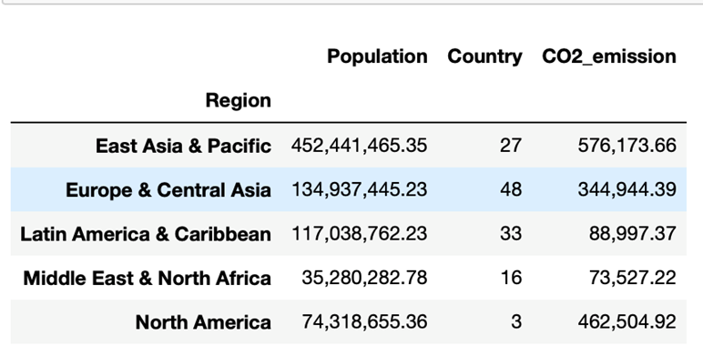
Table 2: Population, Number of countries, and CO2 emission by region
It is noticeable that both Former U.S.S.R. and Russia did not have the ‘Region’ designation and are not included in the trend report. The North American region contains the United States, and Canada.
From Table 2 the clear trend is that most of the CO2 emission currently is happening from the East Asia and Pacific region that includes China which is the global manufacturing hub.
In the future if additional data becomes available for the past three years (2020-2022) that’ll be an interesting observation for the impact of the sars-cov-2 pandemic and how various global and regional shutdowns impacted the CO2 emission rates.
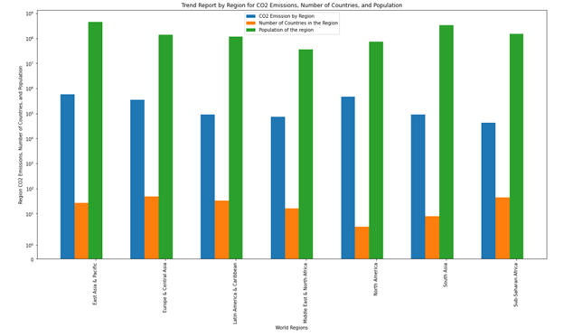
Figure 5: Trend report by region for CO2 emissions, number of countries, and population
Figure 5 shows the CO2 emissions by region and total number of countries, and population contributing to the trend. Table 2 dataset is used to build out Figure 5.
What is the trend for the death rate per 100K population based on air pollution?
Figure 5 shows the CO2 emissions by region and total number of countries, and population contributing to the trend. Table 2 dataset is used to build out Figure 5.
Note: There is a detailed heat map showing the trend in the death rate for each country in the jupyter notebook, for the sake of brevity, only top 20 countries with the highest death rate for the year 2019 are included in this report, Figure 6 below shows that using bar plot.
We did additional analysis on the death rate per 100K based on air pollution and noticed that the CO2 emission for Solomon Islands is one of the lowest on record. In order to ensure that the death rate per 100K was in fact this high for Solomon Islands we did literature research (Health Impacts of Climate Change in the Solomon Islands: An Assessment and Adaptation Action Plan: Jeffery T Spickett, and Dianne Katscherian 2014 Jun 24.) and uncovered that the death rate due to air pollution in Solomon Islands is a concern and health intervention is needed to increase understanding of the possible links between climate change, air quality, and health.
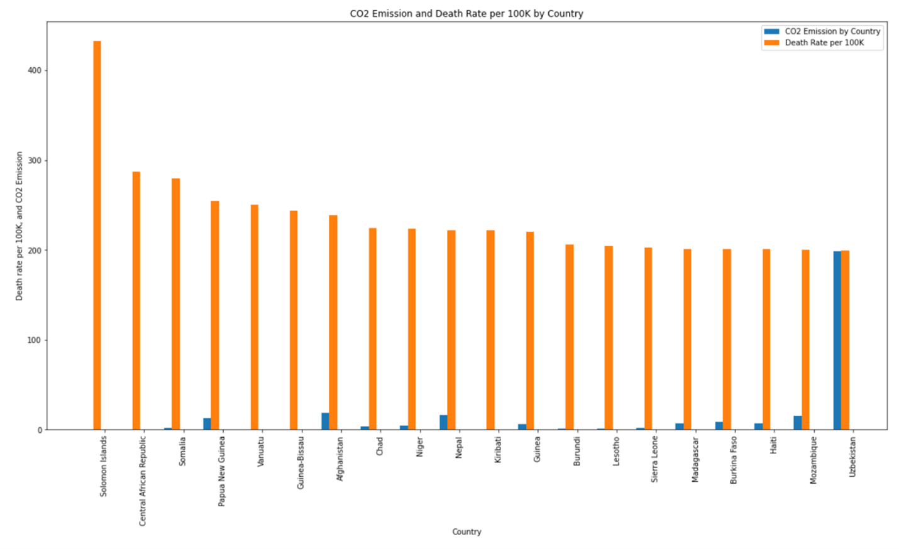
Figure 6: Top 20 countries by death rate per 100K due to air pollution, and corresponding CO2 emission for the year 2019
In conclusion we observe no relationship between the CO2 emission and death rate per 100K based on air pollution as plotted in Figure 6.
What is the world’s trend on renewable energy? We were interested to see if the world is taking climate change seriously and how has the world responded to the topic by generating renewable energy. By creating three different data frames we can plot, seen in Figure 7, the energy trend for renewable energy, nuclear energy, and the combination nuclear and renewable energy production per year.
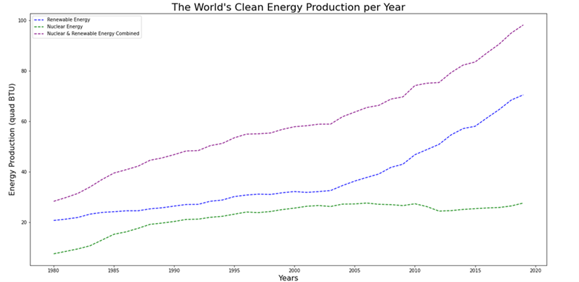
Figure 7: The world’s clean energy production is increasing every year.
The renewable energy production has slowly increased until 2003 where it has increased at a higher rate than ever seen before. Nuclear energy had a large increase in the 1980 to 1985 and stopped increasing as much when renewable energy started to pick up. From 2004 to 2019 there has been a rise of renewable energy and a decrease in nuclear energy. The overall trend for the world is an increase in renewable energy and nuclear energy. We have defined clean energy as the summation of nuclear and renewable energy.
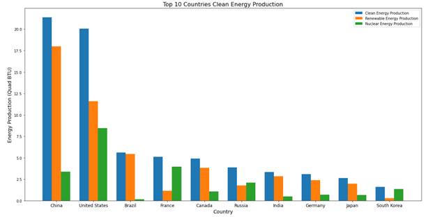
Figure 8: China produces the most clean energy.
The top 10 countries producing clean energy can be seen in Figure 8. China has produced the most renewable energy in 2019 while the US produces the most Nuclear Energy in 2019. Overall, China produces the most clean energy. The countries in Figure 8 are countries that are in the top 15 highest GDP rankings based on Investopedia[1].
Which large country had the greatest percent decrease in CO2 emissions from their peak?
The first step was finding out when a country peaked in CO2 emissions. Once we found out which year was each country’s peak, we looked at any time after that for the lowest CO2 emission year. Then we subtracted the low from the peak to find the total decrease in CO2 emissions. We turned that into a percentage to find out which country had the largest percentage drop from their peak. The results weren’t very informative.
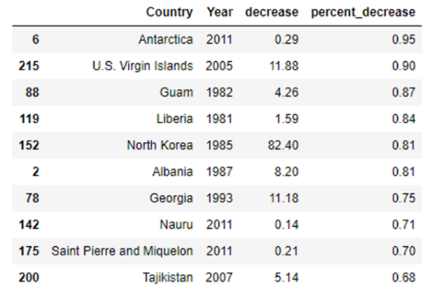
Table 4: Largest percent decrease of all countries
As you can see, our top country was Antarctica and then the U.S. Virgin Islands. Those countries are so small that any small change could cause huge swings in their CO2 levels. This made us update our question to include “large country” and “percent decrease” to avoid ambiguity of what we meant by the word decrease. So, we decided to look at the top 10 countries with the highest total drop in CO2 levels and then sort those by who had the highest percentage drop in CO2 levels. When we did that, we got a much better list.
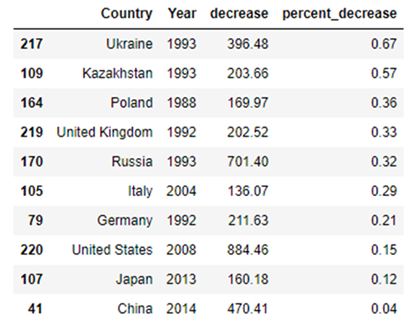
Table 5: Better table that shows largest percent decrease of largest CO2 producing Countries
This clearly showed us that Ukraine had the highest percentage drop of all the large countries. Next, we wondered what Ukraine could be doing to achieve the impressive 67% drop in CO2 emissions. We hypothesized that they most likely just stopped producing energy with coal and petroleum and switched over to nuclear or other renewable sources. To test this hypothesis, we had to plot the country’s energy type and production. This allowed us to quickly visualize the trend of all the energy types. What we found confused us.
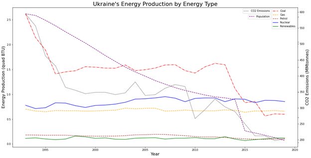
Figure 9: Shows Ukraine’s energy production by type, CO2 levels, and Population per year.
It looks like Ukraine reduced CO2 levels by reducing the amount of coal production. It's interesting that they didn't increase production in any other forms of energy to compensate for the reduced energy. This made us question what else could be going on. Why wouldn’t Ukraine increase its output to compensate for all the coal energy production loss? We decided to add in Ukraine’s population just to see what it would look like. In question 1 we found out that Japan had a declining population and there wasn’t a correlation with CO2 levels. In that case, Japan’s population had dropped very little, around 2%, and it was a recent development. Whereas in Ukraine’s case, they had a massive 20% decline in population since 1993. Although this probably isn’t the only reason for the drastic decline in CO2 levels, it is most likely a heavy contributor.
Conclusion
After cleaning and exploring the dataset, we have found multiple insights into the different factors affecting CO2 emission. To our surprise there is not a direct relationship between population growth experienced by a country and its CO2 emission levels. It does appear that more industrialized nations emit higher levels of CO2. Looking at the wealth of a nation and its emission of CO2, low-income countries emit the least amount of CO2 compared to other medium and higher income countries. Petroleum based energy has emitted the most CO2 compared to the other energy sources. There are countries that produce more energy than they consume, and the top 3 countries are Russia, Saudi Arabia, and Norway. The accumulation of the excess energy from 1980 to 2019 by the three countries is 1400 Quad BTU. This World in 1980 produced 292 Quad BTU of energy. There can be better planning for the three countries' energy production. The world has taken an initiative in reducing CO2 emissions and has increased the energy production of renewable energy. From 1980 to 2019 there has been a 300% increase in renewable energy production, and this has been a linear increase.
Democrats or Republicans. Who had more difficulty voting?
1. Importance and Context
Voter engagement for the 2020 United States presidential election was at record levels, with more voters saying “it really matters” who wins the presidency than at any point over the last twenty years. At the same time, challenges such as the pandemic and social unrest led to half of the registered voters indicating it would be difficult to vote in the election. There has been a significant change since October 2018, shortly before that year’s midterm election, when 85% of registered voters said it would be easy to vote in the midterm elections. A better understanding of the various influencers of voter turnout is useful for your organization for party strategists and campaign managers.
This study will focus on the 2020 election and better understand the difficulty levels in voting between parties, which is one of many factors impacting voter turnout. Specifically, the goal of the analysis is to address the following research question:
Did Democratic voters or Republican voters experience more difficulty voting in the 2020 election?
As consultants we are here to answer this question in order to provide guidance and a foundation for your future research. This includes determining if voter difficulty is a major bellwether of turnout and, if so, further decomposing the factors that lead to these difficulty levels, such as registration, absentee versus in-person voting, long waits at polling places, or bad weather, which can be analyzed in the future. In addition, this analysis will allow us to identify if the difference in difficulty voting between Republicans vs. Democrats was statistically significant in the recent election. If the results are statistically significant, the reasons for difficulty in voting can be further assessed and mitigated.
2. Data and Methodology
The study utilized data from the 2020 Times Series Study conducted by the American National Election Studies (ANES). The Times Series Study interviewed 8280 individuals and comprised pre-election and post-election interviews from August 2020 through the end of December 2020. The sample we created from a subset of the ANES Times Series Study is limited in terms of generalizing to the US voter population across all demographic groups. This is due to the fact that we didn't leverage the weighting provided by ANES that is based on the US census.
Before answering the question of which political party had more difficulty voting, we need to operationalize the concepts, including who is a voter, their political affiliation, and the type of difficulty the individual had. Having this information provides context to exhibit who had more difficulty voting statistically.
To classify a respondent as a voter, we look at those who have already registered to vote (at their current address, another address, or without an address) or are planning on registering to vote. As registering is a prerequisite for voting, we believe this variable is a strong indicator of being a voter. For V201008, values 1, 2, and 3 gave information about their registration address, while the other values did not give additional information. V201009 determined if voters were registered to vote, and value 1 gave applicable information for the study.
We use the following fields for voter identification:
Variable_Name
Description
Value
V201008
PRE: WHERE IS R REGISTERED TO VOTE (PRE-ELECTION)
1,2,3
V201009
PRE: WEB ONLY: IS R WITHOUT ADDRESS REGISTERED TO VOTE (PRE-ELECTION)
1
There are multiple ways to identify a respondent's respective party, for instance, voting behavior in past elections, voting in the primaries, the party they are currently registered to, etc. The pre-election self-identified affiliation variable was the best way to measure a respondent's political stance due to the quality and quantity of the data. Their political stance before and during the act of voting was taken into consideration. Values 1 and 2 correspond to the political party, while the other values did not give any more information.
We use the following field for party affiliation:
Variable_Name
Description
Value
V201228
PRE: PARTY ID: DOES R THINK OF SELF AS DEMOCRAT, REPUBLICAN, OR INDEPENDENT
1,2
How difficult it was for respondents to vote and the main reason respondents did not vote were used to determine the difficulty in voting. The combination of the two factors encompassed how hard it was for voters to cast their vote and why they found voting difficult. The values (2,3,4,5) of having difficulty voting were used in the study to determine which party had more difficulty for V202119. We utilized values that were not in the respondents control that induced difficulty in voting for V202123.
We use the following field for party affiliation:
Variable_Name
Description
Value
V202119
POST: HOW DIFFICULT WAS IT FOR R TO VOTE
2, 3, 4, 5
V202123
POST: MAIN REASON R DID NOT VOTE
9, 10, 11, 12, 13, 14, 15
After assigning true or false values based on if it was difficult for party members to vote, we observed how many democrats and republicans had difficulty voting.
1: Difficulty Voting Democrats(D) vs Republicans(R)
Democrats had more true and false values, which aligned with the population of democrats being higher than republicans. However, we looked into the true and false cases as a percentage of the respective party population samples. The percentage difference between true and false was not notable between parties. Utilizing the party as a grouping variable and defining the response variable as proportional count of difficulties per group we can conduct some statistical tests.
We evaluated various reputable hypothesis tests to determine which is best for answering our research question. After reviewing the assumptions that must be met for each test, we were able to narrow our choices down to the two-sample proportion test and the comparison version of the Wilcoxon rank sum test. As we evaluated difficulty as a binary true or false value instead of a scale of ordered categories, the data was determined to be more appropriately wrangled for the proportion test. Additionally, the Wilcoxon rank sum test is of lesser statistical power; therefore, we determined the proportion test was best suited for our analysis from these two test options.
The proportional statistic assumptions were validated for proper use of the test statistic. The first assumption for the proportional two-group comparison test was independence and identical distributions (i.i.d). Independence can be assumed since random sampling occurred, and one sample's information cannot be inferred from other samples. However, the population of the samples changes from 8280 (pre-election interviews) to 7,782 (post-election interviews). There is a 7% decrease in the population size, which will not heavily affect the probability distribution. The following other assumptions are correct as the sample population follows a binomial distribution, and the data are simple random values from the population.
While evaluating for practical significance, Cohen’s d is not well suited as it requires normality. For our binary data, we chose the Phi coefficient, which yielded a value of -0.031. The result indicates that there is virtually no relationship between political party and voter difficulty, meaning other factors drive difficulty.
Below is the accounting table summarizing the data wrangling after the exploratory data analysis (EDA) of the dataset.
Cause
Number of Samples Available for Analysis (after removal for cause)
Removed Number Samples for cause
Start
8280
0
Non-Voter
7888
392
Independents (non-partisans) or no party affiliation provided
5280
2608
Note: For the response variable value that is not included in the selections, we assign a binary/boolean value to the record. Therefore, we do not have any missing or out-of-range response variable values.
3. Result
As we have two independent samples, Democratic voters and Republican voters, and difficulty being defined and organized as binary/boolean values, we derived the counts for total voters and the counts for voters with difficulty for each party. We use the proportion hypothesis test for binary data.
Null Hypothesis: The proportion of Democrat voters with difficulty voting is equal to the proportion of Republican voters with difficulty voting.
H0: p1=p2, versus select one HA: p1≠p2
The proportion hypothesis test returns a p-value of 0.02847, which leads us to fail to reject the null hypothesis as it is not within the rejection region (< 0.025).The result is not statistically significant.
4. Discussion
While this is limited based on how Democrats and Republicans responded to ANES interviews, our study found evidence that voting difficulty does not have a strong relationship with the voter's political party. It is consistent with our findings that there is no significant difference in the Democrat and Republican populations we compared for voting difficulty. Additionally, we have shown that difficulty wasn’t experienced at a very high rate across either party, with just over 10% of Democrats and Republicans expressing this in their survey responses.
Since the 2020 election had the highest turnout in United States history, it does not appear that difficulty had a significant role in preventing people from getting to the polls. Instead, it may make sense for future research to look at other predictors of voter turnout, such as education or socioeconomic status.
Introduction
You have been hired by a major retailer to develop algorithms for an online ad auction. Your client knows a little about the multi-armed bandit literature and recognizes that it can spend money to explore, learning how likely users are to click on ads, or to exploit, spending on the most promising users to maximize immediate payoffs. At the same time, there are other companies participating in the auction that may outbid your client, potentially interfering with these goals. Your task is to model the ad auction and develop an effective algorithm for bidding in a landscape of strategic competitors. Your client plans to test your bidding algorithm against other bidding algorithms contributed by other data scientists, in order to select the most promising algorithm.
The Auction Rules
The Auction has a set of bidders and users and multiple rounds representing an event which a user navigates to a website with a space for an ad. When this occurs the group of bidders will place to have an opportunity to show the select user their ad. The user may click or not click the ad and the winning bidder gets to observe the users behavior. The rule is the same as a second price sealed-bid auction.
There are num_users User s, numbered from 0 to num_users - 1 . The number corresponding to a user will be called its user_id . Each user has a secret probability of clicking, whenever it is shown an ad. The probability is the same, no matter which Bidder gets to show the ad, and the probability never changes. The events of clicking on each ad are mutually independent. When a user is created, the secret probability is drawn from a uniform distribution from 0 to 1.
There is a set of Bidder s. Each Bidder begins with a balance of 0 dollars. The objective is to finish the game with as high a balance as possible. At some points during the game, the Bidder 's balance may become negative, and there is no penalty when this occurs.
The Auction occurs in rounds, and the total number of rounds is num_rounds. In each round, a second-price auction is conducted for a randomly chosen User. Each round proceeds as follows:
1. A User is chosen at random, with all User s having the same probability of being chosen. Note that a User may be chosen during more than one round.
2. Each Bidder is told the user_id of the chosen User and gets to make a bid. The bid can be any non-negative amount of money in dollars. A Bidder does not get to know how much any other Bidder has bid.
3. The winner of the auction is the Bidder with the highest bid. In the event that more than one Bidder ties for the highest bid, one of the highest Bidder’s is selected at random, each with equal probability.
4. The winning price is the second-highest bid, meaning the maximum bid, after the winner's bid is removed, from the set of all bids. If the maximum bid was submitted by more than one bidder then the second price will be the maximum bid. For example, if two bidders bid 2 and no one else bids higher then 2 is the winning price.
5. The User is shown an ad and clicks or doesn't click according to its secret probability.
6. Each Bidder is notified about whether they won the round or not, and what the winning price is. Additionally, the winning Bidder (but no other Bidder) is notified about whether the User clicked.
7. The balance of the winning Bidder is increased by 1 dollar if the User clicked (0 dollars if the user did not click). It is also decreased by the winning price (whether or not the User clicked).
Sequence Diagram
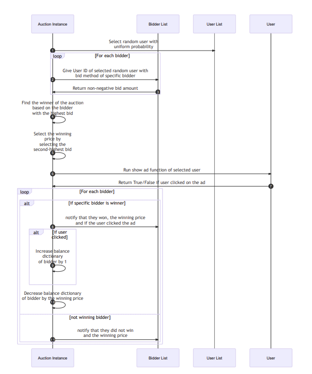
Game Setup
1. Create Users.
2. Create Bidders.
3. Designate number of rounds.
4. Create Auction object with user and bidder list passed in.
Running the simulation
5. Auction class will be called and will randomly choose a user.
6. The auction asks if the bidders would like to bid for a specific user.
7. Bidders have the option to bid knowing who the user is.
8. The highest bidder is selected but only gets charged the second highest bid amount. If a tie occurs, then a bidder is randomly chosen out of the two and the tied bid will be the charged bid cost.
9. The ad is shown to the user and the user will randomly choose to watch the ad. Each user has a different probability whether to watch or not.
10. The user sends information to the auction whether the ad was watched, and the auction notifies the winning bidder if the user watches or not.
11. If the user watched, then the bidder is rewarded a dollar.
12. The auction holds the balance of each bidder and updates the accounting books (a dictionary object).
13. Another round will be played until the auction has reached the set number of rounds played.
Deep Dive into the Architecture and Code Architecture for each user:
The code below is the user class. Each user object has a random probability designated. The show_ad function in the user class is binary choice to watch or not watch the ad and will return the results to the Auction. The show_ad function is called in the auction class.
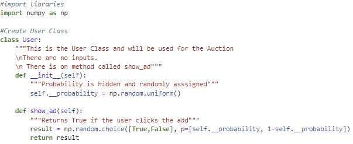
Architecture for the bidders:
In this section I will go through the architecture of the bidder class at a high level. There are comments in the code to explain each portion of the code.
The class Bidder can pass in two parameters, the number of users in the auction and the number of rounds the auction will conduct. Each bidder object will have an idea of the number of users, number of rounds, a dictionary of the users (key is the users and values are the number of times the bidder has won a bid for that user), a personal winnings list, a counter to count the number of bids made, and user dictionary to see how many times a user has watched an ad. The bid function will be called during the auction class. The bid can take in the user parameter. The idea for this code is collect information of the user and make a strategic bid. The way I designed this algorithm is to find that user from the bidders users list and take the ratio of times the user has watched over the times the bidder has paid to show the user an ad. For the first hundred rounds the bidder bids a dollar, not exceeding the winnings cost, to collect information and stop other bidders from knowing the users. By taking each users information early on, I am able to learn about the user and learn the probability of the user clicking the ad or not. Having this information early on I can bid aggressive for the users with high probability. The code has room for improvement to better designate the probability requirement for how willing a bidder will pay. Under the stringent time frame when the code was developed, this was gauged with a couple of simulations. If time was allowed, I would have run over a hundred simulations of the different bidder models and run a regression on probability amount and bis amount to find the highest return.
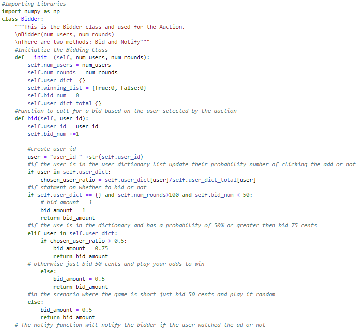
The notify function within the bidder’s class is to notify the bidder if the user has watched the ad or not. This function is executed in the auction class. This portion of the code is where the bidder collects information on the user’s activity and learns more about the users actions.
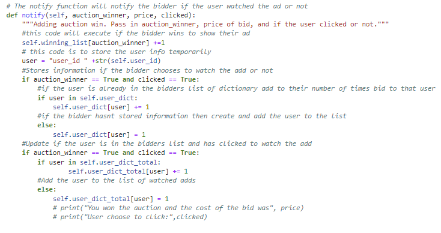
Please note that one bidder was created and tested and competed with other bidder classes created by other students. There was a competition within the programming class to see whose bidder would have the highest return. My bidder and the bidding strategy was in the 90th percentile.
Architecture for the Auction:
The Auction class takes in the users list and bidders list. The auction creates a dictionary of the bidders and stores information on the bidders’ balance.
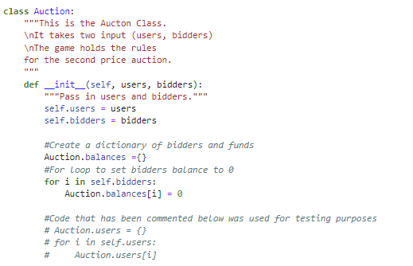
The two code snippets below are both snippets of the execute_round function. The execute_round function within the Auction class is to simulate an event/round of the auctioning. First a user is randomly selected, and the bidders’ bid function is called for each bidder. The bidders are told which user was chosen to potentially click their ad and the bid function is called to see whether a bidder wants to bid on that viewer. Afterwards the auction finds the highest bidder by using the max function to parse through the bidders list. Now the auction object needs to find the second highest bidder and that is done by sorting through the bidder dictionary values and choosing the second highest. Then the auction checks to see if the first highest bidder had bid more than the second highest bidder. If the bids are not equal, then the winner is the highest bidder, and the highest bidders pays the cost that is equivalent to the second highest bidders bid. If bids are equal than the bidder is randomly chosen from the two. After the highest bidder has paid the second highest bid price, the user is shown the ad and decides to click it or not. If the ad has been viewed than the balance of the highest bidder has increased by 1 dollar. The other bidders are notified that the bidder has won the bid but not if the viewer has clicked the ad or not. The highest bidder is notified if the viewer had clicked the ad or not.
Running the code
If you would like to run my code you can open the Test_py_files.ipynb jupytr notebook and run the code seen below. At the top of the page is my github folder for the program and where you can access the code. You will need to have the numpy library in order to run the code. The numpy library was used for the “random” functions.
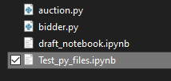
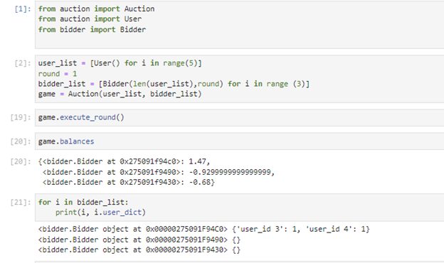
Writting the Report
Currently In Progress
Currently In Progress
Elements
Text
This is bold and this is strong. This is italic and this is emphasized.
This is superscript text and this is subscript text.
This is underlined and this is code: for (;;) { ... }. Finally, this is a link.
Heading Level 2
Heading Level 3
Heading Level 4
Heading Level 5
Heading Level 6
i = 0;
while (!deck.isInOrder()) {
print 'Iteration ' + i;
deck.shuffle();
i++;
}
print 'It took ' + i + ' iterations to sort the deck.';